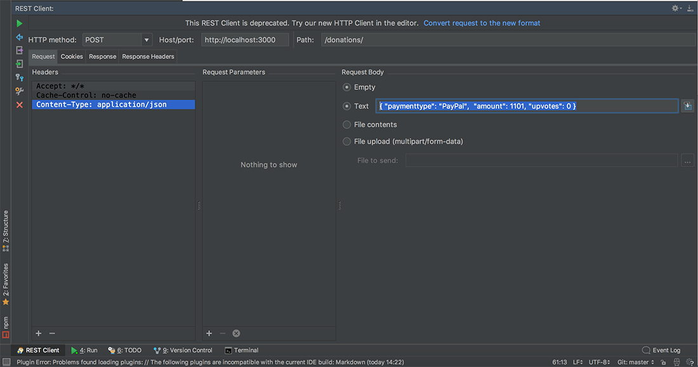

In this lab we will be introducing some proper persistence, through a MongoDB backend, initially running locally, and then eventually deploying to www.mlab.com or if you need a new Atlas account www.mongodb.com so that we can have remote mongo support.
Here's a link to some of the commands you'll be using throughout the lab [QuickLinks] (http://docs.mongodb.org/master/tutorial/getting-started-with-the-mongo-shell/) but most of what we do in this lab we'll have covered in the lectures.
In this Lab, you will be required to build the next version of our Donation Case Study Web App, called DonationWeb 3.0. We will build on the previous lab, so you can either use your own version of DonationWeb 2.0 or download the starter code here (just make sure you rename the project folder). In this version we will be implementing a MongoDB backend (and reusing our previous solution).
On completion of this lab you'll be able to
AND
First thing you should do is download the starter code (or the solution to the previous lab) here and then extract it to your single parent folder for all your web app projects you created for previous labs.
Rename the extracted folder, (or copy your own version) to donationweb-3.0
Open your donationweb-3.0 web app (in WebStorm) and then change your 'title' like so
and launch it.
You may not get any errors, but you should probably reconfigure your project (as it's a copy) and confirm the node modules path as follows:
Open your preferences and navigate to the Library settings and update your node_modules path to point to the current project if necessary.
Launch again, if everything goes to plan you should be able to visit http://localhost:3000 and you should see something like the following:
The next thing to do is to add the mongodb and mongoose module dependencies to our project, which WebStorm can help us with (as we did in Lab 01)
If you want to go old school, you can manually install like so
npm install mongooseand
npm install mongodbConfirm your node_modules now includes the following:
The last step in our 'Setup' is to kick off our localhost mongodb server and insert a few 'Donations' so we can test our refactored 'findAll' function (next step).
Open up a terminal window and launch the mongodb server
Open another, separate terminal window and launch the client
In the client window,
db.donations.insert("paymenttype" : "PayPal", "amount" : 1500, "upvotes" : 0 })So what we have here is a database called donationsdb and a collection within it called donations
To confirm the records were inserted correctly execute a find()
db.donations.find()We now have a few records or 'documents' we can access via our Node Web Server (next step).
If you have no 'option' to run your app, you may have to reconfigure the 'Run/Debug' settings so select 'Edit Configurations' and you'll get this screen
then (as instructed) click the + button to add a new configuration - select 'Node' and your are presented with this screen
Populate your settings similar to what's below
And run your app to get
Our first step in making a persistent data store is to configure our data models. To do this, we are going to be adding a schema layer on top of MongoDB using a nice library called Mongoose. Before we begin, let's make sure our MongoDB server is running.
If Mongo isn't running on your machine, enter this into your terminal:
mongodand to run a mongo client
mongoWe connect to our local MongoDB instance by adding the following code into our donations.js routes file:
let mongoose = require('mongoose');
...
mongoose.connect('mongodb://localhost:27017/donationsdb');
let db = mongoose.connection;
db.on('error', function (err) {
console.log('Unable to Connect to [ ' + db.name + ' ]', err);
});
db.once('open', function () {
console.log('Successfully Connected to [ ' + db.name + ' ]');
});(It's probably a good idea to remove our javascript list altogether at this point as we don't need it.)
This will open a connection with the donationsdb database running on our Mongo server. Now we can modify our existing model and introduce a database schema.
In our models/ directory edit donations.js and replace the current 'model' with the following code:
let mongoose = require('mongoose');
let DonationSchema = new mongoose.Schema({
paymenttype: String,
amount: Number,
upvotes: {type: Number, default: 0}
},
{ collection: 'donations' });
module.exports = mongoose.model('Donation', DonationSchema);Here we've defined a model called Donation with several attributes corresponding to the type of data we'd like to store. We've declared our upvotes field to be initialized to 0. We also explicitly name the collection within which we are storing our donations.
Next we register that model with the global mongoose object we imported using require() so that it can be used to interact with the database anywhere else mongoose is imported.
It is strongly recommended to run your web server at this point, to ensure everything is configured correctly and before we go ahead an modify our routes to interact with the database.
So as before, go ahead and fire up the server - but make sure your mongodb is running first, and you get the 'Successfully connected ... ' message at the console.
Our current setup involves pulling data from a javascript object array and storing objects back to that array. We now want to be able to store and retrieve our 'donations' from our mongodb database.
The first thing we'll do is modify our 'findAll' route.
Edit your routes/donations.js file and navigate to your existing 'findAll' function.
Now, replace it with the following :
router.findAll = (req, res) => {
// Return a JSON representation of our list
res.setHeader('Content-Type', 'application/json');
Donation.find(function(err, donations) {
if (err)
res.send(err);
res.send(JSON.stringify(donations,null,5));
});
}Notice how we use the Mongoose 'find()' function to retrieve all the objects from the 'Model'.
Make sure you have the proper requires statement in your routes file
var Donation = require('../models/donations');to include the mongoose schema.
GETing all the donations in our mongodb database
/donationsOur first route returned all the donations to a client, but what if the client only want's to get at a single donation from the database - that's what our next route 'findOne' does, so we need to refactor our current implementation to make use of mongoose.
router.findOne = (req, res) => {
res.setHeader('Content-Type', 'application/json');
Donation.find({ "_id" : req.params.id },function(err, donation) {
if (err)
// return a suitable error message
else
// return the donation
});
}Notice the use of the req parameter to pass in the id of the donation we require.
GETing donation with id '5b1d26cc572f1998d830a691'
/donations/5b1d26cc572f1998d830a691requesting donation with id '5b1d26cc572f1998d830aXYZ' (doesn't exist)
/donations/5b1d26cc572f1998d830aXYZAgain, edit your routes/donations.js file and navigate to your existing 'addDonation' function.
And replace it with the following :
router.addDonation = (req, res) => {
res.setHeader('Content-Type', 'application/json');
var donation = new Donation();
donation.paymenttype = // the requested value
donation.amount = // the requested value
donation.save(function(err) {
if (err)
// return a suitable error message
else
// return a suitable success message
});
}There's a bit more going on here, so make sure you understand the general jist of how this works. (But I'll explain in the labs anyway)
You may need to restart your server but if everything goes to plan, you should now be able to store and retrieve 'donations' from your mongodb database.
Let's test our addDonation using WebStorms REST Client (like before)
We need to fill in the Request Body for our POST

GET all the donations again, just to confirm
Again, edit your routes/donations.js file and navigate to your existing 'incrementVotes' function.
And replace it with the following :
router.incrementUpvotes = (req, res) => {
Donation.findById(/*id from request parameters*/, function(err,donation) {
if (err)
// return a suitable error message
else {
donation.upvotes += 1;
donation.save(function (err) {
if (err)
// return a suitable error message
else
// return a suitable success message
});
}
});
}Like last time, there's a bit more going on here, so make sure you understand the general jist of how this works. (But I'll explain in the labs if necessary?)
You may need to restart your server but if everything goes to plan, you might now be able to 'upvote' donations from your mongodb database.
PUTing (or updating) donation with id '5b1d26cc572f1998d830a691'
/donations/5b1d26cc572f1998d830a691/voteGET all donations again to confirm the update
Edit your routes/donations.js file and navigate to your existing 'deleteDonation' function.
Now, replace it with the following :
router.deleteDonation = (req, res) => {
Donation.findByIdAndRemove(/*id from request parameters*/, function(err) {
if (err)
// return a suitable error message
else
// return a suitable success message
});
}Notice how we use the Mongoose 'findByIdAndRemove' function to retrieve and delete the object from the 'Model'.
GET all donations again to confirm
Edit your routes/donations.js file and navigate to your existing 'findTotalVotes' function.
Now, replace it with the following :
router.findTotalVotes = (req, res) => {
Donation.find(function(err, donations) {
if (err)
// return a suitable error message
else
// return the total number of votes
});
}GET all donations first to confirm
If you haven't done so already set up your mongodb remote database on either mlabs or mongodb. You can follow a quick guide to my own setup here mlab setup for both an mlab account and a mongodb atlas account.
Now, create a new mongod connection in your routes/donations file like so
NOTE: The Database is named 'donationsdb', the mongoose Schema will allow us to find the relevant Collection
var mongodbUri ='mongodb://<user>:<password>@ds255260.mlab.com:55260/donationsdb';var mongodbUri = 'mongodb+srv://<user>:<password>@wit-donation-cluster-upbus.mongodb.net/donationsdb?retryWrites=true&w=majority';and connect using this connection instead of your localhost Connection
mongoose.connect(mongodbUri);NOTE - this is my own connection string, so you will need to grab your own connection from your mlab account and use the username/password you set up to access your database
You should run your app to confirm you can connect to your remote mongodb database before proceeding.
Once you're connecting ok, you should then insert a few records and retrieve them, just to confirm everything is working ok and then verify this against your mlab account
You can find the mlab solution to this lab here.